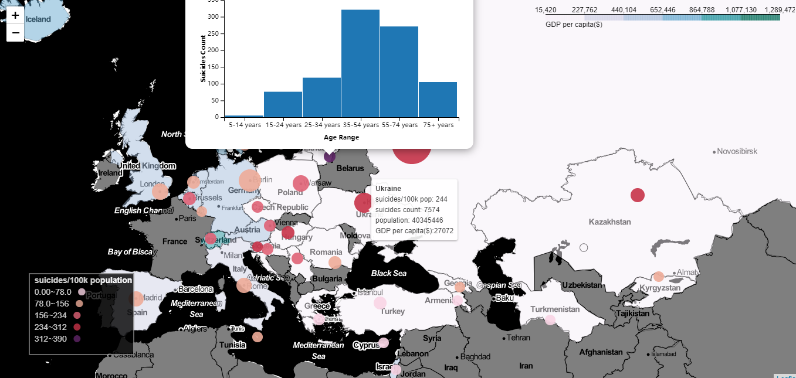

Geographic visualization of the 2015 international suicide rate overview
Geographic visualization of the 2015 international suicide rate overview
My Assignment of Data Visualization
Demonstrate
https://goldexperience.github.io/Geographic-visualization/
Abstract
In this work, I hope that through interactive maps describe the suicide rates around the world in 2015, in the description of the suicide rates across at the same time, also contains the GDP figure, the number of suicide, suicide information such as the age distribution, to help users intuitive understanding to the difference between these data. Through this interactive map, users can not only have a visual understanding of the suicide rate and the number of suicides through the image, so as to quickly retrieve relevant information, but also obtain accurate information and statistical charts by interacting with the map.
By using this map, first areas with very high suicide rates attract users’ attention, such as South Korea and Sri Lanka, which have suicide rates of more than 300 per 100k population and are thus shown in the most prominent purple. Secondly, users can quickly find relevant data of countries they are interested in through their geographical knowledge, such as their motherland or some countries with great international influence.
Dataset
Where/how did you retrieve it or them
This chart combines three different data sets: Suicide Rates Overview 1985 to 2016(Rusty, 2018),World capitals GPS(Crecnik, 2019) and world vector map(AshKyd, 2019). The suicide rate data set contains four sources: Human development index (HDI), World development indicators: GDP, Suicide in the Twenty-First Century, Suicide prevention.
This visualization contains Country, Suicides no, Suicides/100k pop, GDP per capita, Population, Age in Suicide Rates Overview, longitude and latitude are found by country name from World capitals GPS. Using the information in the vector map dataset to demarcate and colour the world map.
Data Exploration, Processing, Cleaning and/or Integration
After reading the data from suicides rate dataset, I found that some of the country name is different from the World capitals GPS dataset. Therefore, this part of the country name must be special processing, to get the correct latitude and longitude.
After that, I wrote a function to retrieve latitude and longitude so that I could do the following visualization.
Then I used the group by statement to put together information about suicide rates, number of suicides in each country. A function was written to store the age distribution of the suicidal person in order as a new sequence for the popup chart.
According to this topic, I think the suicide rate and the total number of suicides as a visualization is the theme of the need to consider.
The total number of suicides will be greatly influenced by the number of population, so it can be used to replace the number of population as auxiliary information to some extent.
GDP per capita of country economy, thus can be used as a background information.
The age distribution of suicides is an important piece of information in the dataset and is therefore chosen as the subject of the pop-up chart.
Visualisation

I think maps are a good way for users to use their intuition of geographic information to retrieve the desired information, so I choose to use maps, bubble maps, choropleth map and pop-up charts for visualization this subject.
Reasons of choice these Visualization Element
World map: Because of the seriousness of the topic, I switched the world map style to a black-and-white style with the details removed, another benefit of which was that users didn’t have to focus on redundant geographic information.
Bubble map: Bubbles with different sizes and colours are placed on the map according to the longitude and latitude of different national capitals. I divided the suicide rate into five levels, using different shades of red. The higher the suicide rate, the darker the red colour. At the highest level, I deliberately used purple so that users could immediately distinguish it from other areas. Using colour to distinguish suicide rates because colour is a better indicator of the severity of the situation.
The size of the bubble is related to the number of suicides in the area, which partly reflects the population, so it is used as an auxiliary information. On the other hand, area is better used to encode quantity information.
Choropleth map：On the map, I use a choropleth map to describe the GDP per capita of each country. Areas with higher colour saturation have higher GDP per capita. Because it needs to be distinguished from the red colour of the bubble chart, I use a blue based colour brewer “PuBuGn” to describe GDP. The use of this colour as background does not affect the user’s view of the bubble chart. Countries without data are covered in grey because grey is often used to represent the concept of “disabled” or “missing value”.
Heat map is similar to choropleth map. I don’t use heat maps for the following reasons:
Heat map does not use geographic boundaries to distinguish different areas. This also means that it cannot be integrated with geographic information, and the occurrence of occlusion will affect people’s intuitive judgment of geographic information. Uncertain shapes can also interfere with the observation of bubble maps.
Legend: Two legends were placed on the map, one describing the suicide rate in the bubble chart, and the other was a striped legend describing the GDP per capita in the choropleth map. Legend of the suicide rate use a 0.8 opacity black background and white font, so it doesn’t ruin the overall colour tone and look out of place. The suicide rate in different ranges with circles of the corresponding colour, so users can naturally recognize that it is the legend of the bubbles on the map.
Movement and zoom of the world map: Users can move the map by dragging and zoom it. In this way, users can use their geographical intuition to find the information they need. If the user does not have a mouse wheel (for example, the user doesn’t know the touchpad’s zooming method), the map can also be zoomed through the button in the upper left corner.
Sizes of bubble markers changes: Size of bubbles can be changed by the scaling of the map. Due to the different area of bubbles, some bubbles will overlap, and cover up some geographic information when the magnification of the map is small. But when the user zooms in on the map, the bubbles shrink so that the user can clearly distinguish between them and select them. Because of this interactive operation, the user does not have to give up the geographic information to be able to clearly use the visualization to obtain the information.
Tooltip for the bubble markers: When the mouse hovers over the bubble, a tooltip pops up, including country names, number of suicides, population, GDP and other information. The advantage of this is that the text information can appear in time when the user needs it, because users are not usually just satisfied with the perceptual knowledge of the data. The country name is put in bold at the beginning so that the user can clearly know that they has chosen the appropriate bubble marker.
Popup bar chart for the bubble markers: When the user clicks on the bubble, a simple bar chart pops up showing the age distribution of local suicides. Because the age distribution itself cannot be represented simply on a map, forcing it would create too much information on the map and confuse users. The use of pop-up Windows allows the user to retrieve data when needed.
List of tools or libraries used
Python Libraries: folium(Conengmo, 2019)(create map), pandas, numpy, json(processing data), vincent(popup chart)
HTML is used to creates legend(Haffner, 2018)
Conclusion
Critically analyse the outcome of your visualisation.
In my opinion, this interactive map provides convenience for users’ information retrieval. Users do not need to input complicated search instructions, but only need to use their geographical intuition to quickly obtain relevant information. The visual design also fits the serious theme of the data itself.
Aspects that I think could be improved upon
I think the colour scheme could be further improved to better match the theme of the data, and the map could be added with a timeline to show the changes in suicide rates over the years by using animation.
Effects or functionality that I was technically unable to achieve?
The background of Legend of Choropleth map should be white so that user can see it more clearly, But I didn’t find the way to fix it.
The popup chart can be modified to show more information, the size of it should be smaller.
However, since I did not find a corresponding method to set the font size in the official documents, I had to keep the current size to make the chart clear, and I also failed to find a method to further improve the chart within the specified time
The boundary data of the world map does not coincide with the boundary data of the folium map, and I have not been able to find more moderate boundary data, so the boundary part of the map is a little messy.
Originally, I wanted to use animation to show the changes of various values in the map over time, but I failed to do so due to lack of technology and time.
References
Ashkyd. 2019. GeoJSON Regions [Online]. Available: https://geojson-maps.ash.ms/ [Accessed 10 Dec 2019].
Conengmo. 2019. folium [Online]. Available: https://python-visualization.github.io/folium/ [Accessed 11 Dec 2019].
Crecnik 2019. World capitals gps Latitude and longitude of world capitals.
Haffner, B. 2018. Creating a legend for a Folium map [Online]. Available: https://medium.com/@bobhaffner/creating-a-legend-for-a-folium-map-c1e0ffc34373 [Accessed 23 Dec 2019].
Rusty 2018. Suicide Rates Overview 1985 to 2016 Compares socio-economic info with suicide rates by year and country.